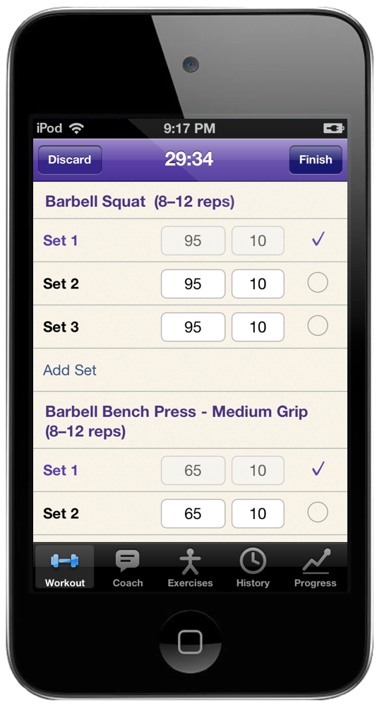
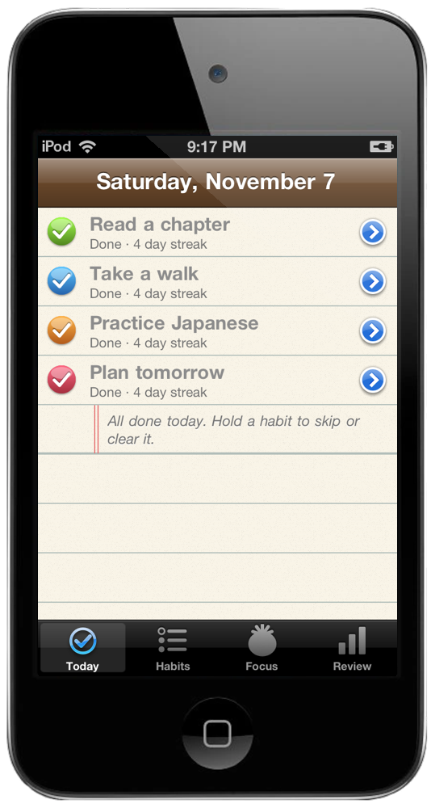
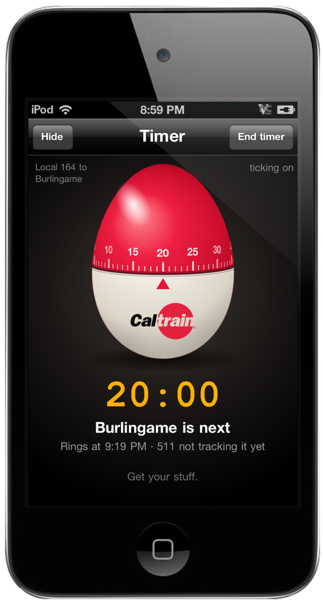
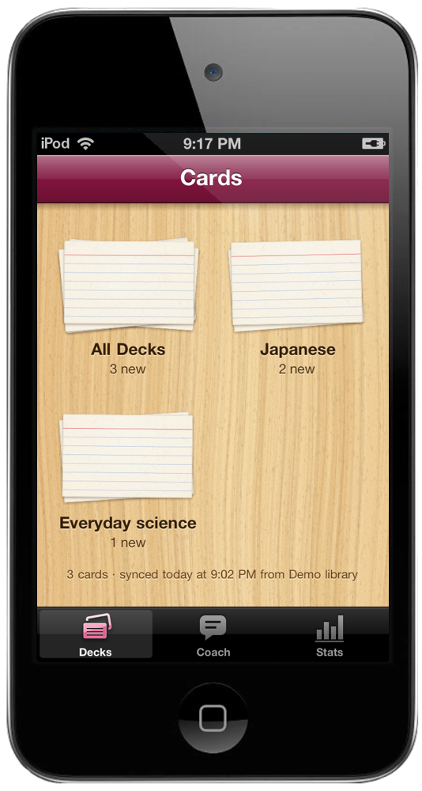

A little more life in your iPod.
Music, conversations, and useful things. All made for a familiar little screen.
Rewind
The click wheel. A familiar turn.
Learn more ›Claude
Modern conversations. A familiar little screen.
Learn more ›
OpenRelay
Text with the best open models. Like texting a friend.
Learn more ›
Laya Ball
Shake. Decide. Repeat.
Learn more ›
Sets
Every rep, with a Claude coach.
Learn more ›
Meals
Your food diary. A little more in tune with you.
Learn more ›
Habits
Small habits. A plan that fits your week.
Learn more ›
Next Train
Caltrain, BART and Muni. Rings before your stop.
Learn more ›
Radio
Forty stations. A real dial.
Learn more ›
Cards
Flashcards, with a little study coaching.
Learn more ›Your iPod. On your Mac.
Meet iPod Mirror, a Mac companion with a live USB screen, keyboard controls, and optional audio. A slim glass bar. A familiar little iPod.
Explore iPod Mirror ›How to installJailbroken iPod touch 4 or iPhone 4 on iOS 4.3 and up. Free downloads. Open-source projects: OpenRelay, Laya Ball, Sets, Habits, Next Train, Radio, Cards.